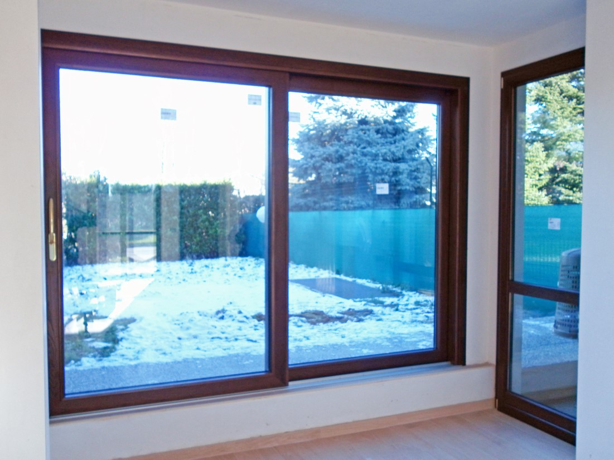
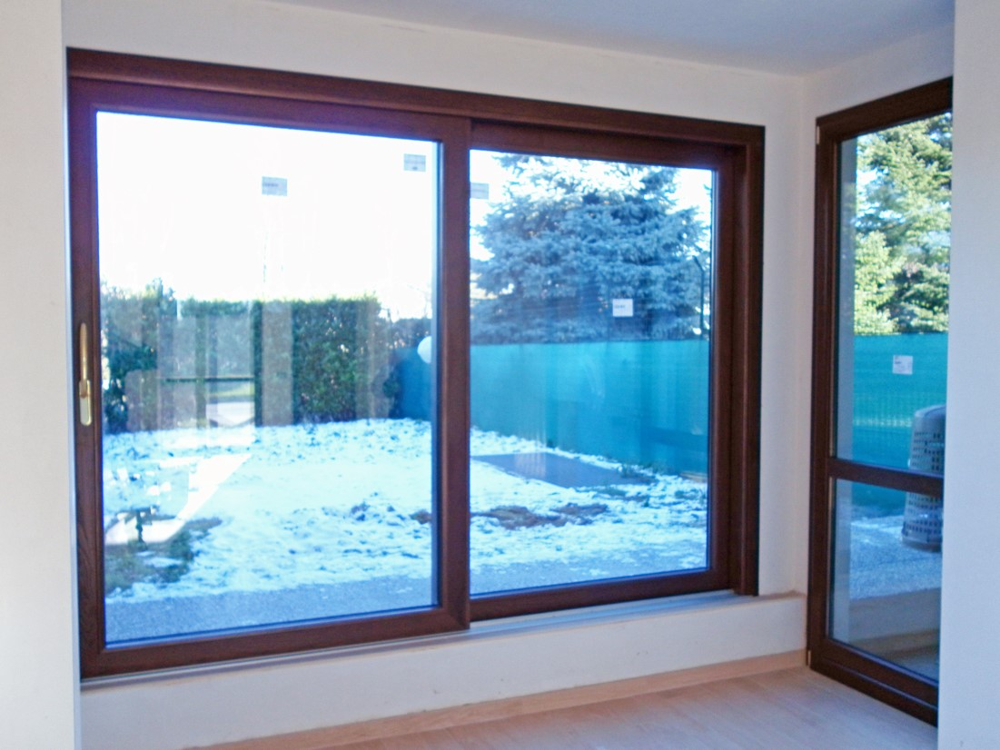

Durata
Un serramento di qualità: realizzato per durare nel tempo e rispondere alle esigenze del cliente.
Garanzie di prodotto (fino a 30 anni) – garanzia di posa (2 anni) – assistenza post
vendita continua (con possibilità di contratto di manutenzione annuale oltre i 3 anni).
Professionalità
Pensiamo che c’è un solo modo per fare le cose: ed è farle bene. Quindi partecipiamo costantemente a corsi di aggiornamento, seminari e quant’altro per essere sempre al top della professionalità, professionalità che mettiamo costantemente al servizio dei nostri clienti.
Servizio personalizzato
Il cliente viene accompagnato in tutte le fasi: dalla scelta e consulenza per il serramento ideale agli aspetti di smaltimento dei vecchi serramenti, dal rilievo tecnico esecutivo al progetto di posa, dall’assistenza post-vendita all’assistenza amministrativa per Agevolazioni Fiscali.
 

Qualità, affidabilità, durata
Un'esperienza acquisita negli anni, macchinari tecnologicamente avanzati e soluzioni su misura per tutti.


FINESTRE E PERSIANE
Serramenti in alluminio, legno e pvc, versatili e duraturi. Finestre fisse, ribalte, persiane, antoni e antine in alluminio.
PORTE INTERNE
Porte interne in legno, vetro e alluminio, porte esterne, portoncini, portoncini blindati e porte garage sia sezionali sia basculanti.
PORTE ESTERNE
Porte esterne, portoncini blindati e rinforzati, porte garage sia sezionali sia basculanti, cancelli e grate.
ALTRI SERRAMENTI
Tapparelle e accessori, cassonetti e zanzariere.
OFFERTE E PROMOZIONI
Non perdere le nostre fantastiche offerte! Tanti prodotti disponibili per te nei nostri magazzini di Milano e della provincia di Monza e della Brianza.
Denia ti segue sempre.
Dalla scelta al supporto logistico, Denia ti accompagna passo dopo passo nell'acquisto del tuo serramento ideale.
SICUREZZA E RISPARMIO
Acquistando un prodotto per la sicurezza, in OMAGGIO la POLIZZA FURTO che copre l’intero valore di acquisto!
PAGAMENTI PERSONALIZZATI
Pagamenti personalizzati fino a 60 mesi!
AGEVOLAZIONI FISCALI
Scopri tutte le agevolazioni fiscali che spettano a chi ristruttura un immobile o acquista serramenti a risparmio energetico!
Denia s.a.s di Digirolamo Erasmo & C.
Via Fortuzzi, 33
20813 BOVISIO MASCIAGO (MB)
P.I./C.F. 02813480965
+39.0362.528177
info@deniaserramenti.com